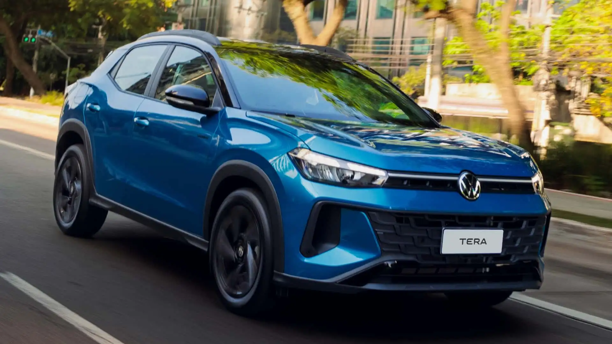
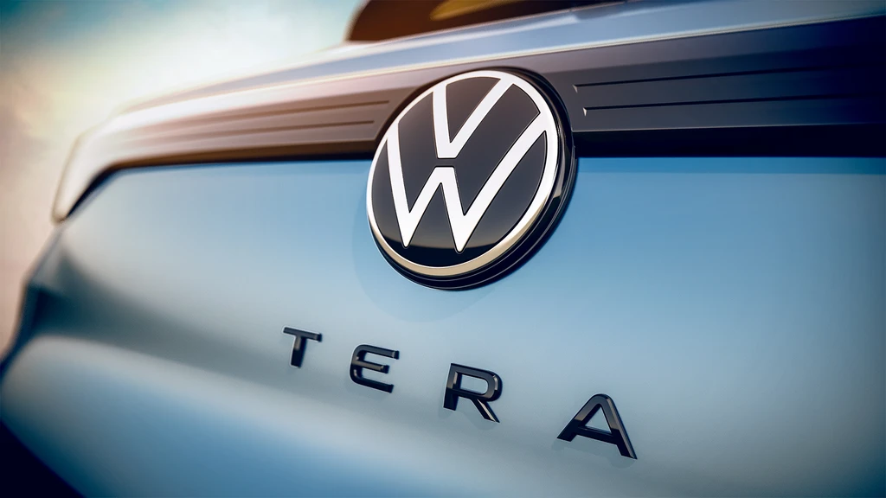

La marca Volkswagen lanza un nuevo auto llamado "VolkswagenTera" (2025)

¿QUÉ ES?: Es el nuevo crossover de VW para el Segmento B (chico). La marca lo define como "SUV". Fue desarrollado bajo la Plataforma MQB-A00. Comparte componentes con otros VW del mismo segmento y se posiciona a mitad de camino entre la oferta de los Polo y Nivus. Estuvo en preventa durante las primeras semanas de agosto, llega importado de Brasil y ya está a la venta en nuestro mercado.
MECÁNICA: Hay dos motorizaciones nafteras disponibles, ya conocidas de otros modelos de VW en Argentina: MSi 1.6 atmosférico (110 cv y 155 Nm, combinado sólo con caja manual de cinco velocidades) y 170 TSi 1.0 turbo 101 cv y 170 Nm, combinado sólo con caja automática de seis velocidades (Tiptronic, con convertidor de par). Tracción delantera.
LO MÁS: Las versiones tope de gama (High y Outfit) tienen un muy buen equipamiento de seguridad, incluyendo Frenado Autónomo de Emergencia (AEB). Esas versiones obtuvieron la máxima calificación en las pruebas de choque de LatinNCAP, con cinco estrellas.
